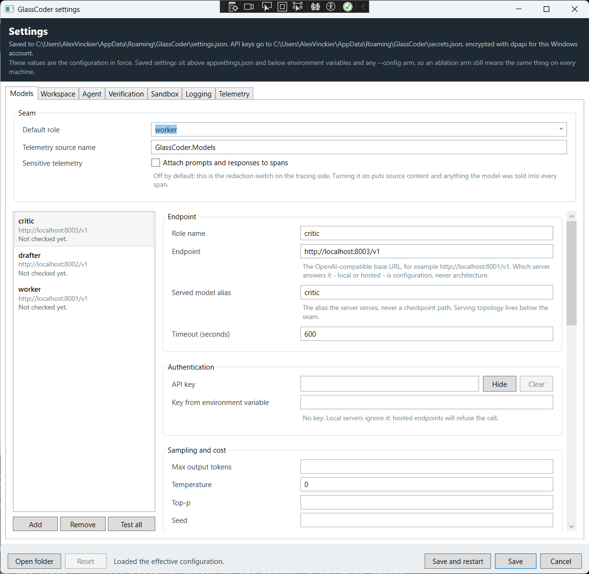
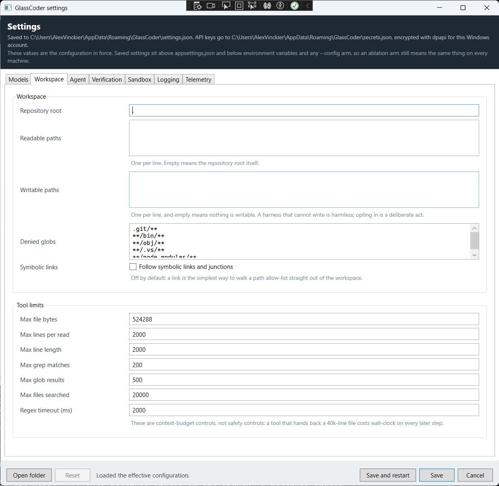
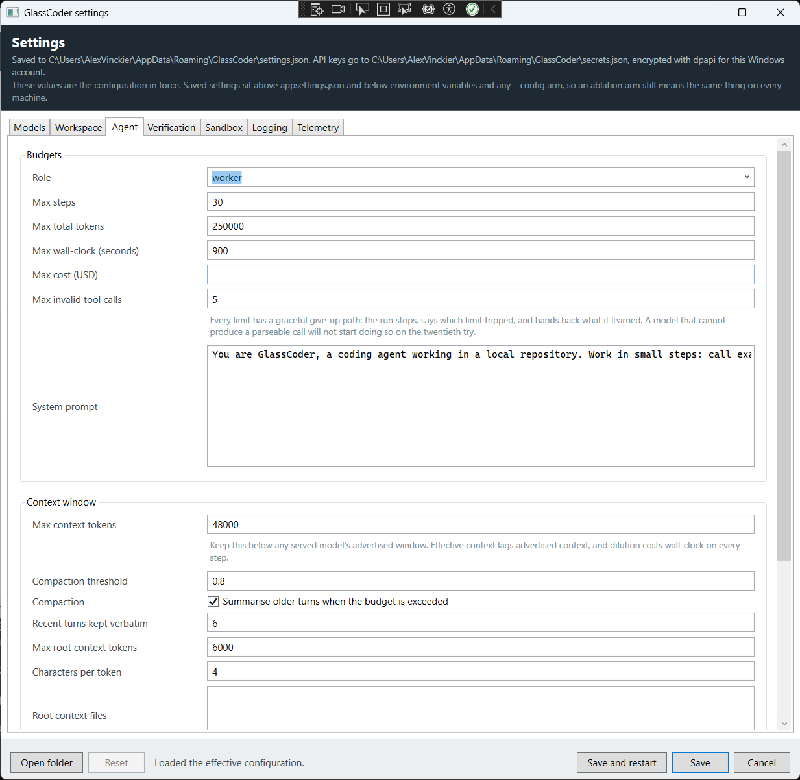
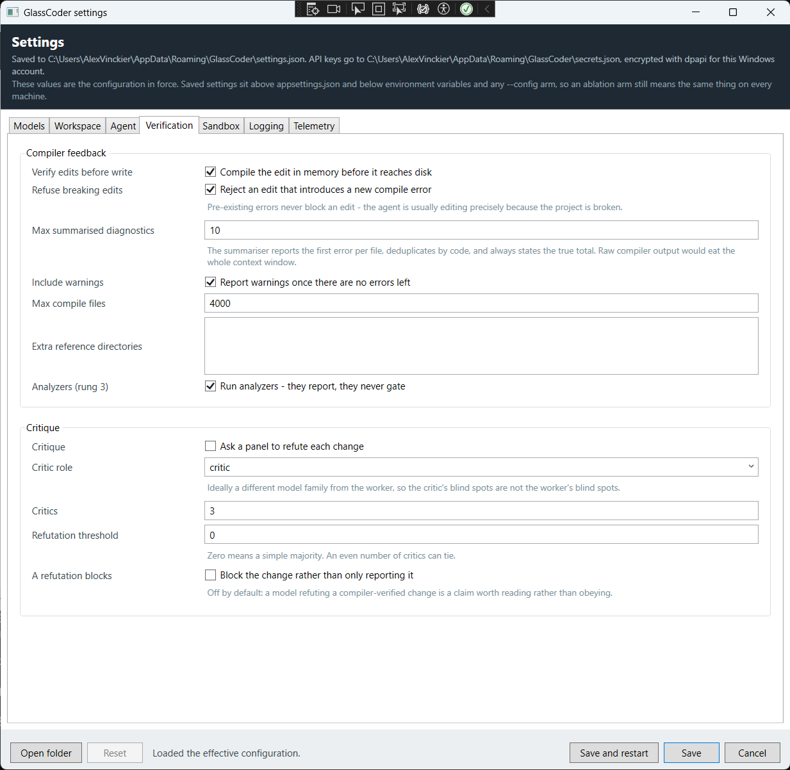
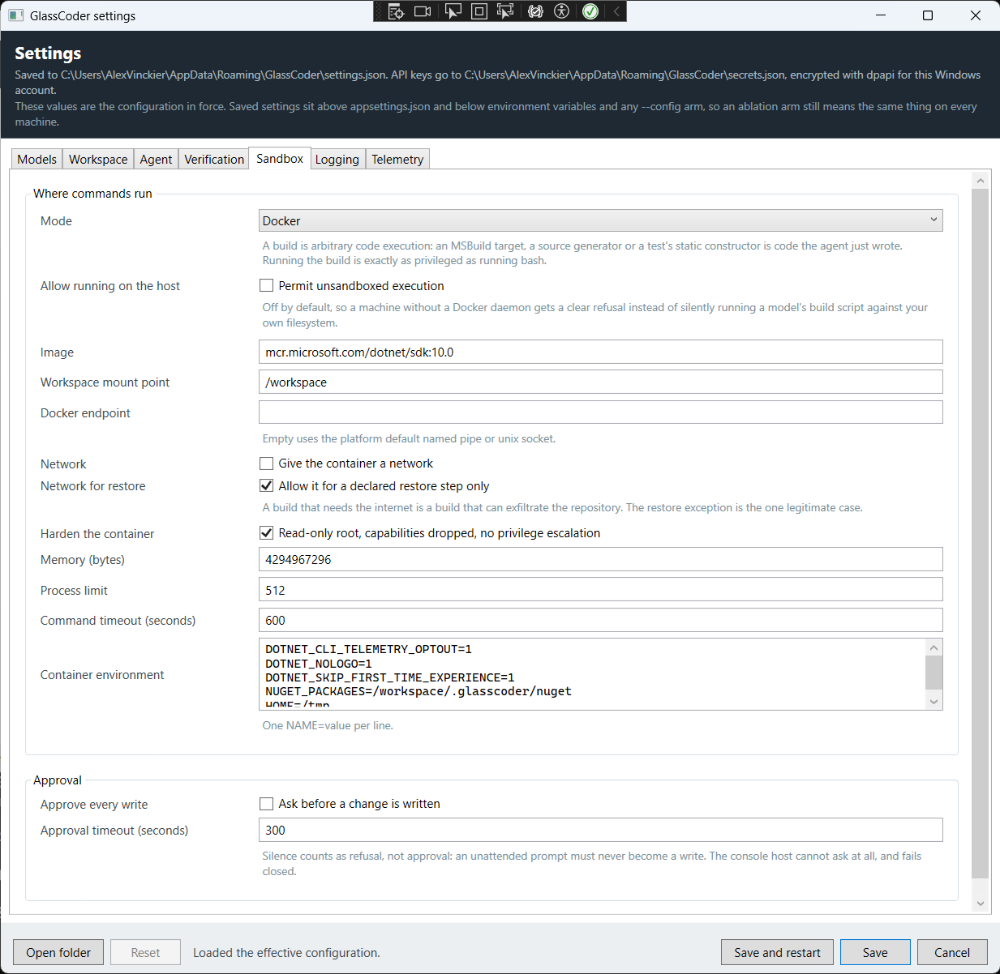
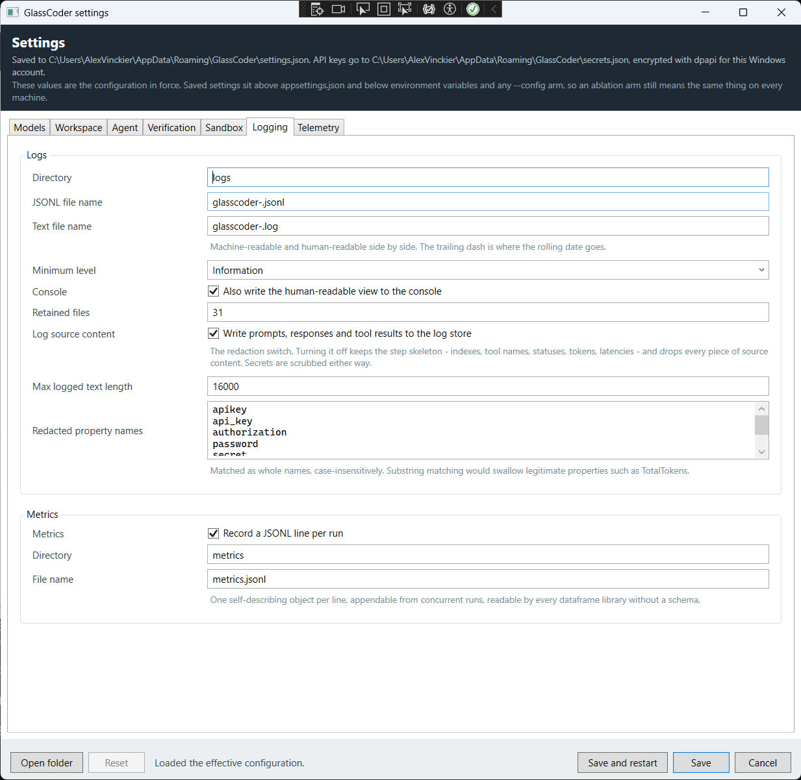
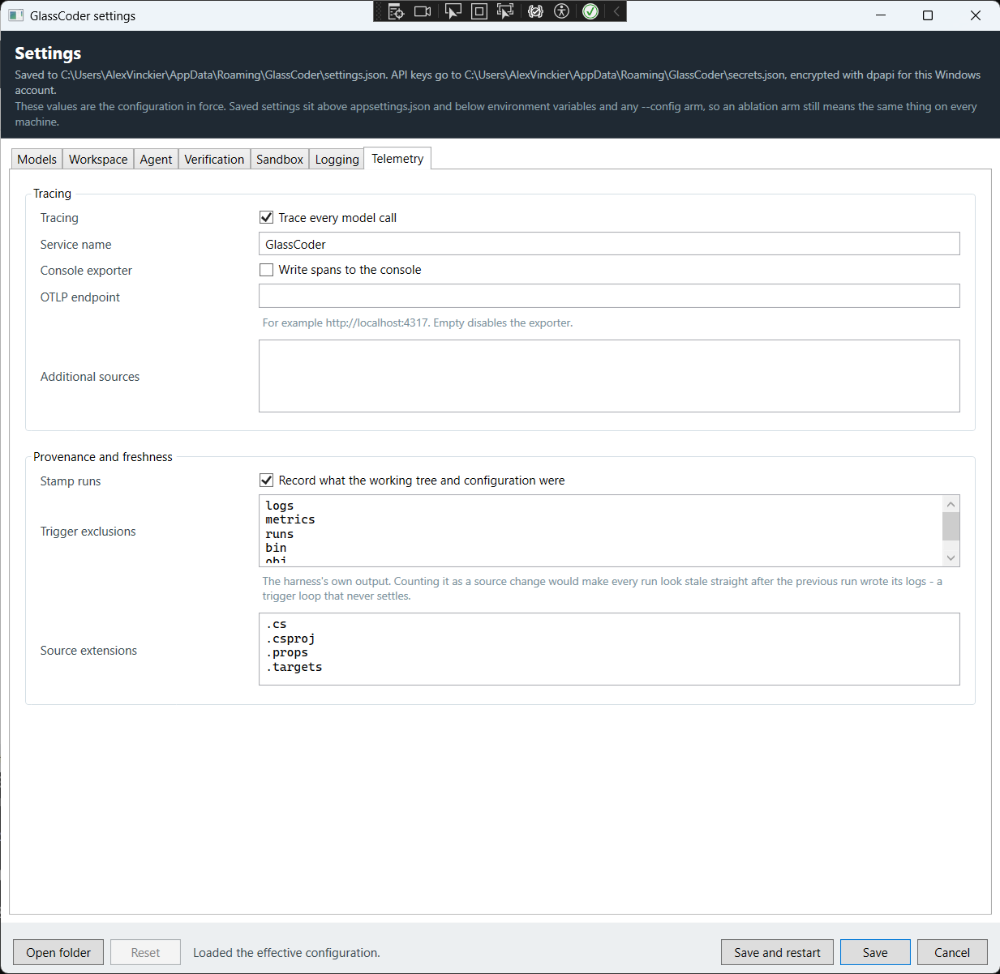

Where settings live
Nothing about the harness is hardcoded — no endpoint, no alias, no budget, no limit. That has always been true; what was missing was somewhere to put a change that is yours rather than the repository's. Settings… in the header writes to two files under your own application data directory:
| File | Path | Contents |
|---|---|---|
| Settings | %APPDATA%\GlassCoder\settings.json | Every section, in the same shape as appsettings.json and in the
clear. A configuration file you cannot read is one you cannot debug. |
| Keys | %APPDATA%\GlassCoder\secrets.json | One DPAPI blob per role, at CurrentUser scope. Nothing else is ever
written here. |
Not the appsettings.json sitting next to the executable. That copy is build
output — the project links it in with CopyToOutputDirectory — so anything saved
into it is one rebuild away from being silently discarded. A per-user file also keeps one
operator's endpoints and keys out of another's, and out of the repository.
Why keys are a second file
Because an API key is not a setting. The store lifts every key out of the serialised
document before it is written, and removes the ApiKey property rather
than nulling it, so the settings file carries no trace of a key having been there. No caller
can accidentally persist one in the clear, because no caller is trusted with the decision.
secrets.json copied to another machine, or opened under another Windows
account, decrypts to nothing. That is the point — but it also means the dialog can say
"stored keys could not be decrypted on this machine" and mean it literally.
Re-enter the key; there is nothing to recover.
Off Windows there is no equivalent that needs no key management, so the protector says so
through the scheme name in the header: plain rather than dpapi
means base64 encoding, which is obscurity and not protection. Put the key in an
environment variable instead.
Open folder in the footer opens that directory, creating it if the dialog has never
saved. Reset deletes both files and drops you back to whatever
appsettings.json says — it is enabled only when there is something to delete.
What overrides what
The dialog shows the effective configuration: every layer the app actually bound, not the contents of any one file. So a value on screen may not have come from the file the dialog saves to — and saving it will not necessarily make it stick.
| Layer | Where | Beats |
|---|---|---|
| 1 · Shipped defaults | appsettings.json | Nothing. This is the floor, and it travels with the repository. |
| 2 · Saved settings | %APPDATA%\GlassCoder\*.json | The shipped defaults. This is what the dialog writes. |
| 3 · Environment | GlassCoder__Agent__MaxSteps=50 | Saved settings. Double underscore separates the levels. |
| 4 · Command line | --GlassCoder:Agent:MaxSteps=50 | The environment. |
| 5 · The arm | --config config/phase1.json | Everything above it. An ablation arm is added last, on purpose. |
The two saved-settings sources are inserted ahead of the environment-variable
source rather than appended to the end. Appending them would have been one line shorter
and would have let a preference saved once, on one machine, redefine what
config/phase1.json means. Arms have to mean the same thing everywhere, or no
measurement taken in one applies to another.
The practical consequence: if a value refuses to change, something above layer 2 is setting
it. Check the environment first — an exported GlassCoder__… variable outlives
the shell that set it, and the dialog will keep showing its value no matter how many times
you save.
Saving does not apply
Every section binds once at startup through IOptions<T>. A save therefore
writes the files and changes nothing about the process you are looking at, which is why the
dialog offers Save and restart next to Save, and why the shell's status bar
reads "Settings saved. Restart GlassCoder for them to take effect." afterwards.
Claiming otherwise would be the same class of lie as a connection check that never connects.
Models & keys
The first tab is the seam: which servers are addressed, as what, with which credentials. Everything else in the dialog is a policy decision; this tab decides whether anything happens at all.

1 2 3 4 5 6- Where this lands
- Both paths, spelled out, and the protection scheme in force. The line under it states the precedence chain, because that is the question the dialog raises the moment you change something.
- Role list
- One entry per served role, each showing its endpoint and the result of its last check — green, amber or red. The whole seam at a glance.
- Endpoint & alias
- The OpenAI-compatible base URL, and the served alias to address. Never a checkpoint path: serving topology lives below the seam, and a path here is rejected before the dialog will save.
- API key
- Masked once set, with Show / Hide and Clear. Empty and visible by default, because the next thing that happens to an empty key box is a paste.
- Add · Remove · Test all
- Roles are configuration too. Test all checks every role in turn and reports how many answered.
- Save · Save and restart
- Both validate first. Anything that would stop the harness from starting is listed in red above these buttons, and nothing is written.
The key, and where it really comes from
A role can take its key from either of two places, and the hint under the field always says which one is winning:
| What the hint says | What that means |
|---|---|
| Saved to secrets.json, protected with dpapi | The key you typed, encrypted for this Windows account. It is never written to
settings.json. |
The environment variable … currently supplies this key |
Key from environment variable is set and populated, and the harness reads it in preference to anything stored. The stored key is dead weight until you clear the variable name. |
The environment variable … is named but not set |
You named a variable that does not exist in this process. This is the failure that
otherwise surfaces as a 401 ten minutes into a run. |
| No key. Local servers ignore it; hosted endpoints will refuse the call | Correct for vLLM, SGLang, llama.cpp and Ollama on your own box. Fatal for anything hosted. |
Prefer the environment variable for a hosted arm you intend to run in CI, and the stored key for a workstation. Both work; only one of them survives being copied to another machine, and that is the point of each.
Sampling, cost and constrained decoding
Below authentication sit the knobs that decide what an arm actually measures. Max output tokens, temperature, top-p and seed all mean empty is the server's decision — an empty box is a real value here rather than a missing one, which is why they clear properly instead of snapping back to zero.
The two cost fields feed cost-per-solved-task. Leave both at zero for a local arm, where the cost is box-hours rather than tokens, and fill them in for a hosted one — otherwise the metric quietly compares a real bill against nothing.
The constrained-decoding group is the highest-return reliability lever in the harness: it
makes a malformed tool call structurally impossible instead of merely unlikely. Note that
the property names are editable, not just their values —
strictJsonSchema, guided_decoding_backend,
guided_json. Which key a server honours drifts between vLLM, SGLang and
llama.cpp releases, so the harness must never bake one in, and neither may this dialog.
Force a tool call on every step is off for a reason. With a read-only tool set the agent could never produce a final answer, and the run would burn its whole step budget before giving up. Turn it on only once a terminal tool exists.
Does it work?
Test connection reports four steps rather than one verdict. That is not thoroughness for its own sake: the four ways a seam fails have four different fixes, and a single "it did not work" hides which one you are looking at.
| Step | Asks | A failure here means |
|---|---|---|
| Settings | Would the harness start on this at all? | An endpoint that is not an absolute http(s) URL, or a checkpoint path where a served alias belongs. Nothing touches the network, so a typo cannot masquerade as an unreachable server. |
| Server | Is something listening, and does it accept the key? | Connection refused is the server. 401 or 403 is the key,
and the check stops there rather than producing a second, vaguer failure. A server
with no /models route is a warning, not a failure — plenty implement
chat completions and nothing else. |
| Alias | Does it serve the alias this role addresses? | The server is up and serving qwen3-coder-30b while the role asks for
worker. A warning, because it still might work: the completion step
decides. |
| Completion | Can it actually generate? | Everything is wired and generation still fails — a served alias whose weights failed to load, or a model still loading into VRAM. |
A local worker, answering:
Works · 105 ms · The model answered "pong" (9 prompt + 1 completion tokens).
Settings Endpoint http://localhost:8001/v1, alias 'worker', API key supplied. 0 ms
Server Reachable, serving 1 alias(es): worker. 62 ms
Alias 'worker' is served. 0 ms
Completion The model answered "pong" (9 prompt + 1 completion tokens). 43 msThe same role with nothing serving it:
Does not work · 4030 ms · Could not reach http://localhost:8003/v1/models: No connection
could be made because the target machine actively refused it. (localhost:8003) Check that
the model server is running and serving this endpoint.
It asks for a real completion over the real endpoint with the real key, and reports the
reply and what it cost in tokens. A served alias whose weights failed to load answers
/models perfectly well — so a check that stopped at a handshake would pass in
exactly the case you most need it to fail, and it would be believed.
Two details worth knowing. The check tests what is on screen rather than what the harness started with, so you can paste a key and check it before saving. And it is capped at thirty seconds whatever the role's own timeout says: a role configured for ten-minute generations must not leave you watching a dialog for ten minutes to discover a port is closed.
The bare transport is used deliberately — no constrained decoding, no telemetry stage. This step answers "can this endpoint, key and alias produce a completion", and a server that rejects a guided-decoding property is a different problem with a different fix.
Workspace & tools
What the agent may see, what it may change, and how much any one tool call is allowed to hand back.

| Setting | Empty means |
|---|---|
| Readable paths | The repository root itself. Permissive. |
| Writable paths | Nothing is writable. Not "everything" — nothing. |
That asymmetry is deliberate, and it is the first thing to change before you expect an edit
to land. A harness that cannot write is a harmless harness; a harness that writes wherever it
likes is not. Opting in is a deliberate configuration act, so src and
tests go into the box by hand.
Denied globs are subtracted from everything, readable and writable alike. They ship covering
.git, bin, obj, .vs and
node_modules — the directories where an agent can only do harm or waste context.
Entries you add are added to that set rather than replacing it.
Follow symbolic links stays off unless you have a specific reason: a link is the simplest way to walk a path allow-list straight out of the workspace.
Max file bytes, lines per read, grep matches, glob results. None of these stop the agent doing anything; they stop it filling the window. A tool that hands back a 40k-line file costs wall-clock on every later step of the run, not just the one that read it — so each tool truncates and says so rather than letting the window fill silently.
Agent & context
Budgets, the system prompt, and how the window is assembled and compacted.

The four budgets — steps, tokens, wall-clock, cost — are part of the loop rather than something bolted to it. Each has a graceful give-up path: the run stops, says which limit tripped, and hands back everything it learned. Max cost is the one that may be empty, which disables the check; it is priced from the per-role token costs on the Models tab, so it does nothing at all while those are still zero.
Max invalid tool calls is a different kind of limit. A model that cannot produce a parseable call will not start doing so on the twentieth try, and five consecutive failures is enough evidence to stop paying for the twenty-first.
Context
Keep max context tokens deliberately below any served model's advertised window. The governing fact is that effective context lags advertised context, and dilution costs wall-clock on every loop step rather than only the one that added the tokens. The shipped 48 000 against a 128k-advertised model is not timidity; it is the setting that goes fastest.
Root context files is the lean always-loaded root — a couple of files, not a documentation index. Everything else is retrieved on demand with grep, glob and read_file. If you find yourself adding a fourth file here, the thing you actually want is a better first tool call.
Compaction summarises older turns once the budget is exceeded, keeping the most recent turns verbatim: those are the ones the model is actually reasoning over. Characters per token feeds the heuristic estimator — an estimate on purpose, since running a real tokenizer every step would cost more than the accuracy is worth.
The orchestration group at the foot of the tab is off by default and built last on purpose. Sub-agents are a layer over a working loop, never a substitute for one, and the parallelism is bounded because they share one GPU.
Verification & critique
The ladder runs cheapest oracle first — syntax, compile, analyzers, tests, full suite — and this tab controls the rungs that have a choice to make.

Verify edits before write compiles the edit in memory before it reaches disk, and refuse breaking edits rejects one that introduces a new compile error. Pre-existing errors never block an edit — the agent is usually editing precisely because the project is broken, and a gate that could not tell the difference would deadlock it.
Max summarised diagnostics caps what the model is shown. The summariser reports the first error per file, deduplicates by error code, sorts by file position and always states the true total, so the agent knows the scale of the break without reading it. Raw compiler output is never handed to a model: a cascade of hundreds of errors consumes the entire context window and teaches it nothing the first three did not.
Analyzers are rung 3, and they report rather than gate whether they run or not. That is the same rule the repository's own build follows.
Critique
Each critic is asked to refute the change rather than to review it. The asymmetry is the point: "is this good?" invites agreement from a model that has just been shown a plausible-looking diff, while "find what is wrong with this" gives it a job it can fail at honestly. Critics vote independently and never see each other's verdicts.
Put the critic on a different model family from the worker if you can, so the critic's blind spots are not the worker's blind spots. A refutation threshold of zero means a simple majority; an even number of critics can tie.
Block the change rather than only reporting it is off by default. The critique rung's value is the recovery rate it drives, and a model refuting a change the compiler has already verified is worth reading rather than obeying.
Sandbox & approval
Where code the agent just wrote is allowed to execute, and who gets asked before a file changes.

An MSBuild target, a source generator, a test's static constructor: each is code the agent just wrote or fetched, running with the harness's privileges. "Run the build" is exactly as dangerous as "run bash", and is treated the same way here — containerised, with the network dropped except for a declared restore step, and no silent fallback to the host.
Permit unsandboxed execution is off so that a machine without a Docker daemon gets a
clear refusal instead of quietly running a model's build script against your own filesystem.
Setting mode to Local without also ticking it is caught by validation before the
dialog will save, because that combination can run nothing at all.
Harden the container gives it a read-only root filesystem, drops every Linux
capability, forbids privilege escalation and bounds the process count. The mounted workspace
stays writable — the agent has to be able to edit and build — so hardening constrains what a
build can do to the container, not to the repository it was handed. Scratch space
arrives as tmpfs rather than by unlocking the root filesystem, which is why the container
environment pins NUGET_PACKAGES and HOME at writable paths.
Approval
Ask before a change is written turns the Changes surface into a gate: each write pauses with the diff and Approve / Reject next to it. It ships off, because the harness's normal mode is headless measurement.
Nobody answering within the approval timeout rejects the change, with that reason recorded. Not approval — an unattended prompt must never become a write. The console host cannot ask anyone at all, so it fails closed rather than approving silently.
Logging & metrics
The transcript is the primary teaching artifact, and this tab decides how much of it survives to disk.

Two sinks, always: JSONL for machines and text for people. Every run must be fully reconstructable as a transcript from the logs alone, which is why the step skeleton — index, tool name, whether the call parsed, tokens, latency, outcome — is written regardless of what else is switched off.
Log source content is the redaction switch. Turning it off keeps that skeleton and drops every piece of source content: prompts, responses, tool results. Use it when the repository is not yours to log.
Two independent layers guard the log store, and neither is sufficient alone. One redacts
secret-shaped values wherever they appear — a bearer token pasted into a prompt, a
key echoed by a tool. The other blanks secret-named properties, and that is the
list on this tab. Names are matched whole and case-insensitively: substring matching would
swallow legitimate properties such as TotalTokens.
The metrics group names the JSONL the Metrics surface reads. Both directories resolve against the working directory rather than the executable's — which is the single most common reason a dashboard comes up empty. The Metrics surface always names the exact path it looked at; check that before checking anything else.
Telemetry & provenance
Tracing every model call, and stamping every run with what the code and context were when it ran.

Tracing is attached inside the model-client pipeline itself, so every call is traced without any call site having to remember to do it. Leave the OTLP endpoint empty and spans go nowhere; point it at a collector and they go there. The console exporter is useful while learning and noisy afterwards.
Whether prompts and responses ride along inside those spans is not set here — it is Sensitive telemetry on the Models tab, and it is off by default. That is the redaction switch on the tracing side, and it is deliberately separate from the logging one: exporting spans to a collector is a different trust boundary from writing a file on your own disk.
Provenance stamps each run with the state of the working tree and configuration, and judges whether the context was newer than the code. The trigger exclusions are the harness's own output — logs, metrics, runs, bin, obj, .git. Counting those as source changes would make every run look stale immediately after the previous run wrote its logs: a trigger loop that never settles.
How it is wired
The dialog binds the real options classes rather than a parallel set of editable copies. That is the one structural decision worth knowing about, because it is what stops the dialog rotting: a second, hand-maintained model of the configuration drifts the moment somebody adds a property, and then the UI quietly stops being able to set it. Here a new option round-trips through the file the day it is added — only its editor has to be written.
| Type | Project | Does |
|---|---|---|
| GlassCoderSettings | Core/Configuration | Every section in one object, read from the effective IConfiguration
and validated in the same words the startup validators use. |
| UserSettingsStore | Core/Configuration | Writes both files atomically, and lifts the keys out of the document on the way. |
| DpapiSecretProtector | Core/Configuration | Encrypts at rest, and reports honestly when it cannot. |
| ModelConnectionProbe | Models | The four-step check. UI-free, so the console host could use it too. |
| SettingsViewModel | Wpf/ViewModels | Binds the options objects, validates before saving, owns the commands. |
| SettingsWindow | Wpf/Views | Seven tabs. Its code-behind is twenty lines and sets a DataContext. |
The configuration sources are added in GlassCoderHost, the one bootstrap both
front ends share — so the console host reads the same saved settings and the same keys as the
desktop app. Two front ends binding different configuration would slowly become two different
agents, and no measurement taken in one would apply to the other.
The configuration binder appends to a list that already holds defaults rather than replacing it. Saving the effective configuration back to disk therefore writes out the defaults, which the binder would append to the defaults again on the next load. The reader deduplicates for exactly this reason — without it, the denied-globs list would double every time you opened the dialog.
When it looks wrong
| Symptom | Cause |
|---|---|
| A value snaps back after saving | Something above layer 2 is setting it — almost always a leftover
GlassCoder__… environment variable, or the --config arm
the app was launched with. |
| Save did nothing, and red text appeared | Validation failed. The list above the buttons names every problem, in the words the startup validators would use. Nothing was written. |
| "Stored keys could not be decrypted" | secrets.json came from another machine or another Windows account.
DPAPI is bound to the account; re-enter the key. |
| The check passes, a run still fails on auth | A named environment variable is supplying a different key from the stored one. The hint under the key field says which is winning. |
| Server step warns, completion passes | The server does not implement /models. Common, harmless, and the reason
the alias step is skipped rather than failed. |
| Alias step warns | The server serves something else. Read the list it returned and address a served alias — serving topology lives below the seam. |
| Completion times out at thirty seconds | The check is capped there whatever the role timeout says. Usually a model still loading; try again once the server reports ready. |
| Saved settings changed nothing | Every section is bound once at startup. Use Save and restart, or restart yourself. |
| The agent still cannot write | Writable paths is empty, and empty means nothing — not everything. |
| You want the shipped configuration back | Reset deletes both files. The next start falls back to
appsettings.json. |